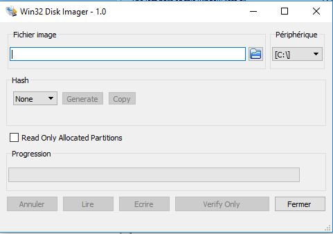

Relever les valeurs I2C d'un capteur relié à une Raspberry.
Cette page retrace le parcours de notre groupe au cours du mini-projet, qui concerne l'installation d'un capteur RTC DS1307 sur une Raspberry ainsi que son fonctionnement.
En effet, nous allons parler ici de l'installation de la Raspberry et du capteur, les tests I2C avec SmartTY, puis enfin de la programmation pour pouvoir récupérer les valeurs dans un fichier (.csv) .
En effet, nous allons parler ici de l'installation de la Raspberry et du capteur, les tests I2C avec SmartTY, puis enfin de la programmation pour pouvoir récupérer les valeurs dans un fichier (.csv) .
Installation.
Ressources :
La première chose à faire a été de graver l'image fournie sur la Raspberry, pour pouvoir ensuite commencer à manipuler. Pour cela, nous avons utilisé Win32DiskImager après avoir branché connecté la Raspberry à la machine Windows:
Il nous reste à connecter la Raspberry au capteur:
-Image ISO 2018-10-11-raspbian-wheezy
-Zip Sha256
-Raspberry et carte SD
-Win32DiskImager
-SmartTY
-CROSS Codeblocks
-Capteur RTC DS1307
-Câblages et, si nécessaire, matériel à soudure.
-Zip Sha256
-Raspberry et carte SD
-Win32DiskImager
-SmartTY
-CROSS Codeblocks
-Capteur RTC DS1307
-Câblages et, si nécessaire, matériel à soudure.
La première chose à faire a été de graver l'image fournie sur la Raspberry, pour pouvoir ensuite commencer à manipuler. Pour cela, nous avons utilisé Win32DiskImager après avoir branché connecté la Raspberry à la machine Windows:

Une fois le système utilisable, il a fallu vérifier le code SHA256 et installer les logiciels nécessaires (Codeblocks, SmartTY).
Interface de Win32DiskImager.
Il nous reste à connecter la Raspberry au capteur:

Image du capteur branché à la Raspberry.

Image d'une Raspberry, avec les branchements du capteur.
Tests I2C.
SmartTY va enfin nous être utile. "i2cdetect","i2cset" et "i2cget" ( et parfois "raspi-config" en cas de besoin) on été utiles pour obtenir les valeurs du capteur.
Exemple de i2cdetect, où l'on peut voir apparaître le capteur à l'adresse 0x68.
Programmation.
Une fois tous les tests i2c effectués, il nous a fallu faire un programme capable de tourner en continu, l'intérêt étant d'actualiser les valeurs récupérées par le capteur à chaque nouvelle boucle du programme( on peut choisir l'intervalle de temps qui sépare une boucle d'une autre).
De plus, nous devions enregistrer ces valeurs dans un fichier csv (il a donc fallu utiliser les fonctions "fopen", "fclose" et "fprintf").
Nous avons donc désormais un programme capable de lire l'heure en continu, tout en faisant des affichages à des intervalles réguliers dans la console et en enregistrant les valeurs dans un fichier csv à chaque renouvellement.
De plus, nous devions enregistrer ces valeurs dans un fichier csv (il a donc fallu utiliser les fonctions "fopen", "fclose" et "fprintf").
Portion du programme gérant la partie "fichier csv".
Nous avons donc désormais un programme capable de lire l'heure en continu, tout en faisant des affichages à des intervalles réguliers dans la console et en enregistrant les valeurs dans un fichier csv à chaque renouvellement.